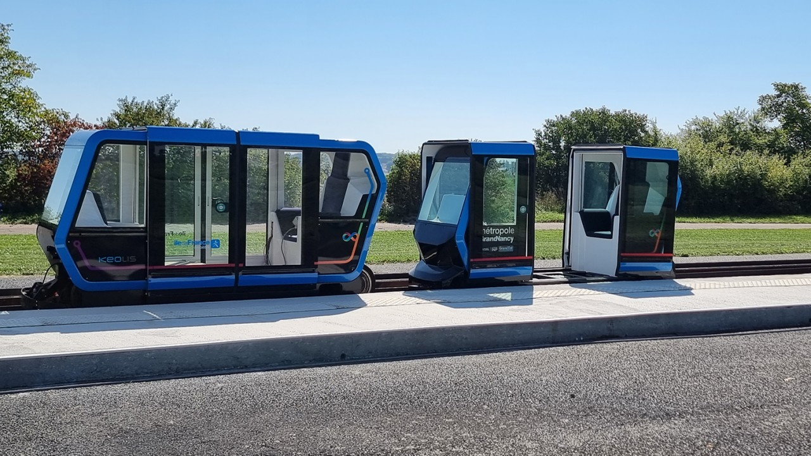

Urbanloop est un projet de transport urbain innovant développé en France, basé sur un système de capsules électriques autonomes circulant sur des rails. Ce projet a été initié par plusieurs écoles d'ingénieurs et vise à offrir une alternative rapide, écologique et économique aux transports traditionnels.
Urbanloop présente plusieurs avantages :
Bien que prometteur, Urbanloop présente certains défis :
Urbanloop se présente comme une révolution du transport urbain, alliant efficacité énergétique, faible impact environnemental et automatisation avancée. Cependant, son déploiement nécessitera une adaptation des infrastructures et une sensibilisation du public pour une adoption réussie.